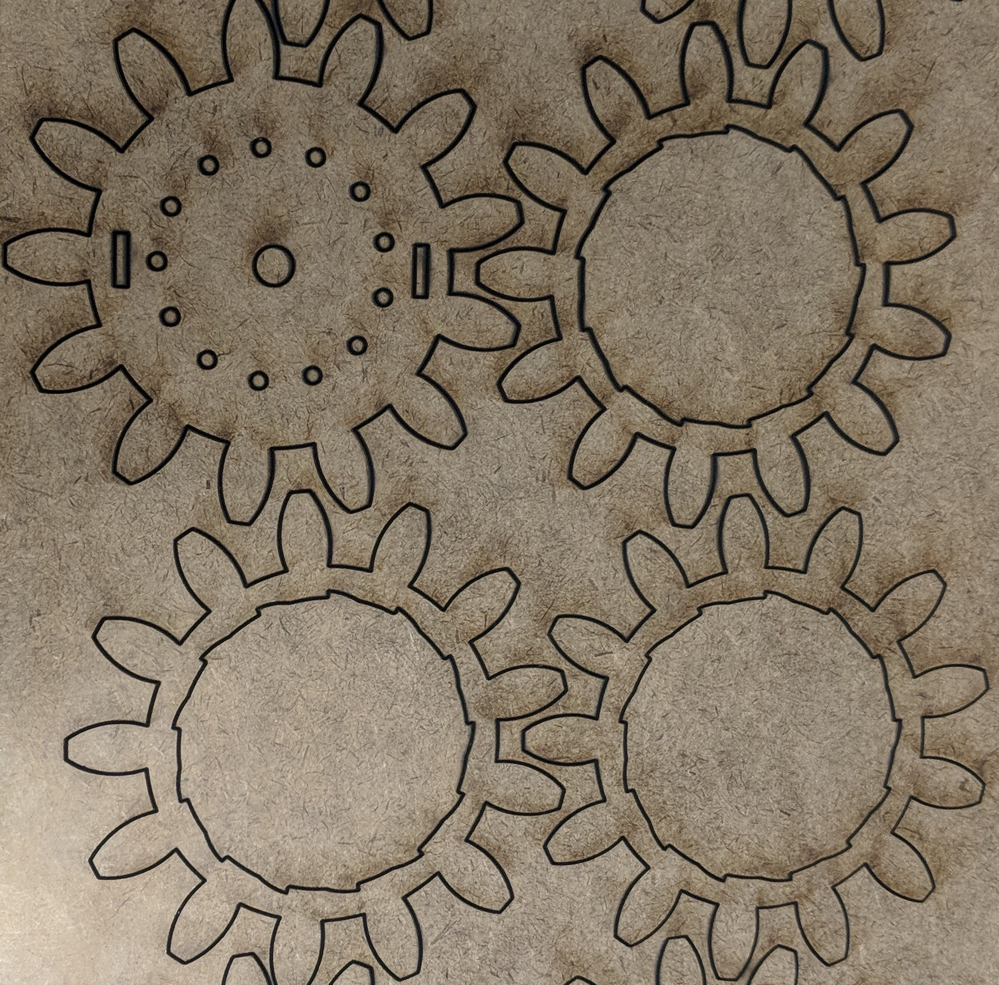
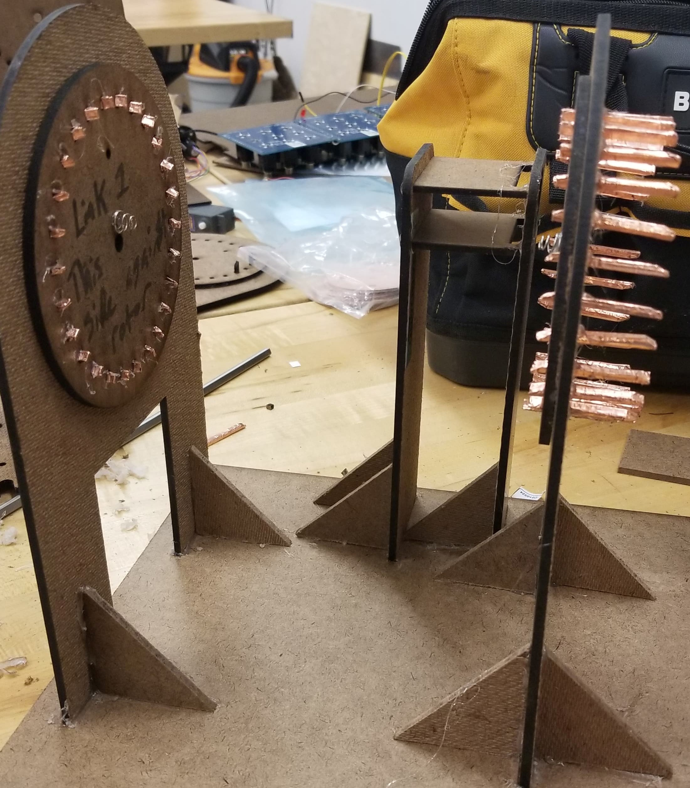
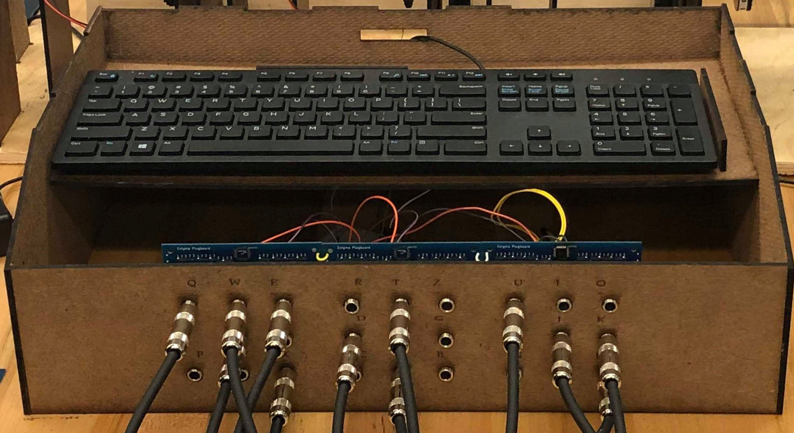

{kind=link}
Toolbox Gears
We initially used gears from the solidworks toolbox to allow the electrical team to test while the mechanical team prototyped rotors.
We sought to create our own interpretation of the original Enigma's mechanical system in a way that would interface seamlessly with the electrical challenges of creating our visualization.
Our mechanical system follows the general outline of the original Enigma machine, with a keyboard, four rotors, and a plugboard. The original machine takes input from a keyboard, passes that letter through the plugboard for an initial swap of one letter with another, and continues on, passing the swapped letters through a series of rotors that further encrypt it and back through the plugboard. A block diagram for our system can be found here.
The bulk of our entire system, however, relies on a series of rotors. We have developed a set of links to hold these rotors off the ground and enable flawless rotation. These links allow all of the wires necessary for the electrical system to work to pass through unobstructed, interfacing directly with the copper taped contacts that transmit the electrical signal for each letter through the entire system.
For safety reasons, we enclosed the electrical contacts such that they were not visible in order to prevent arcing and viewers from inadvertently touching the contacts whilst the EL Wire is powered.
During our initial testing, we utilized the Solidworks toolbox gears. These helped us to take the focus off of the mechanical system while the electrical and software subteams sought to integrate aspects of their initial designs with the mechanical system. These gears proved useful in the short term and allowed us to work on rotor designs for incorporating the electrical contacts and EL wire into the system. Eventually, however, we knew we needed to transition away from these gears, as the Solidworks toolbox imposed significant restraints on altering the designs and the rotors were not actually all that consistent. To compound these effects, their teeth were rather bulky and interacted in a rather clunky manner.
 In considering the way we intended to make the gears for our final product, we realized that because we needed to fit 26 letters on each rotor, each letter would only be allocated 13.8 degrees. This meant that slight errors in how far the servos were driven could cause the EL Wire to lose contact and thus interfere with the encryption process.
In considering the way we intended to make the gears for our final product, we realized that because we needed to fit 26 letters on each rotor, each letter would only be allocated 13.8 degrees. This meant that slight errors in how far the servos were driven could cause the EL Wire to lose contact and thus interfere with the encryption process.
To remedy this problem, we transitioned to a Geneva drive. In this setup, a rotating cam mechanism attached to the servo contained a pin that fit into a slot on the driven wheel, the rotor, in order to turn the rotor stepwise. This new drive prevented small errors in the amount the servo turned the cam from moving the electrical contacts contained within the system away from their desired resting points. Though the design of this mechanism proved difficult to perfect, we eventually settled on a design that was consistent and easy to manufacture, with the rotor itself being lasercut out of hardbaord and the the cam being 3-D printed.
As we intended to create a system of four rotors like the original Enigma machine, we needed a way to hold the rotors off of the ground to allow them to rotate freely while also passing the electrical signal down the rotors in order to illuminate the correct series of letters. As a result, we designed a series of so-called links to link the rotors together. Over the course of the project, these links evolved with the rotors as well as the electrical contacts. Eventually, the mechanical and electrical subteams settled on a design that utilized 3-D printed pieces that had angled ends and were wrapped in copper tape in order to transmit the electrical signal through the links. Additionally, we attached springs to these links to maintain contact with the copper plate on the rotors as they rotated.
In order to effectively integrate the mechanical and electrical systems, we needed to design the rotors to work with the EL wire, the copper plate being mounted on the rotor, and the contacts. We went through numerous iterations of this design, ranging from small holes that simply allowed the wire to pass through to slots for the battery clips. We worked closely with the electrical team at all times to meet their specifications and ensure that the two subsystems would be able to work together cohesively in the final product.
We initially used gears from the solidworks toolbox to allow the electrical team to test while the mechanical team prototyped rotors.
We updated our rotors to be Geneva drives and rigged a rotor to test three different ways of making electrical contact at once.

We updated the rotors to have slots for the new battery clip contacts rather than holes for the EL wire.
We updated the links to fit the new 3-D printed, copper taped wrapped contacts that propagate the electrical signal between rotors.
We added the copper plate to the rotor and incorporated a mix of slots for the battery clips and holes for the EL wire.
For the sake of saving money, we have chosen to utilize a modern keyboard in order to simulate the typewriter feel of the original machine. We enclosed this keyboard in hardboard housing and 3-D printed keys with which the user can interact. Within the same housing, we have incorporated the plugboard, allowing the user to directly swap one letter with another in a seamless way.
The housing was crafted entirely in hardboard and designed to hold most of the components within it. To start out, the housing was designed to be a box with holes, made so that you can type on the keyboard through the holes, and was not made to incorporate the plugboard. But as the project developed, the front aspect of it became a component for holding the plugboard, initially being a 3 piece assembly to hold 3 different PCBs. However, to optimize material and aesthetic, this quickly became a singular slab of hardboard that help each of the 3 PCBs together with the letters they represent rastered above each hole. Additionally, to allow wires to go in and out of the housing, we made a small hole in the back of the housing so that parts like the plugboard and the keyboard could connect to the parts outside of the housing like the LCD display. Additionally, we added keyboard holders to the inside of the housing so that the keyboard is held in place and we wouldn’t have to worry about fixing it when incorporating the keys. Then to display the inside of the housing and the work happening behind the scenes, we opened up the front part of the housing, right above the plugboard, so that people can see the parts working together within the actual housing instead of just the display itself since we wanted to visualize the encryption process and the different parts of this project.
 In developing the keys, we played around with multiple different sizes and lengths of the keys, starting from short but wide keys. From this, we wanted to move towards a more accurate representation of the keys used in the real Enigma machine, so we moved into two different types of keys, one being tall and thin with a wide base to hold it up to represent the actual keys the closest, and another that was tall and wider through the stem, still capturing some of the historical accuracy. From trying these two, we concluded to go with option 2 but slightly shorter so that it could be a more stable key that we do not have to worry about falling and leaning over when not in use.
In developing the keys, we played around with multiple different sizes and lengths of the keys, starting from short but wide keys. From this, we wanted to move towards a more accurate representation of the keys used in the real Enigma machine, so we moved into two different types of keys, one being tall and thin with a wide base to hold it up to represent the actual keys the closest, and another that was tall and wider through the stem, still capturing some of the historical accuracy. From trying these two, we concluded to go with option 2 but slightly shorter so that it could be a more stable key that we do not have to worry about falling and leaning over when not in use.
{kind=link}
{kind=link}
{kind=link}